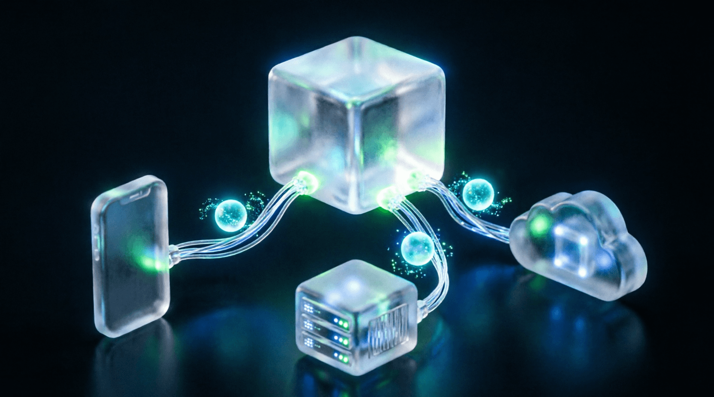

Урок 20: Выравнивание моделей (Alignment)
ML-инженер • Блок 4: Масштабирование и инженерия LLM
Предобученная на огромном корпусе текстов модель (Base Model) умеет только продолжать текст. Она не понимает концепцию диалога, дает токсичные ответы и легко генерирует опасный контент. Чтобы превратить её в полезного ИИ-ассистента (типа ChatGPT), применяется этап выравнивания (Alignment) по критериям Полезности (Helpfulness), Честности (Honesty) и Безвредности (Harmlessness). На этом уроке мы разберем математику современных подходов к обучению на основе предпочтений человека.
В датасете для выравнивания каждому промпту $x$ соответствуют два ответа: предпочтительный $y_w$ (winning/chosen) и отвергнутый $y_l$ (losing/rejected). Функция потерь DPO заставляет модель максимизировать логарифм вероятности генерации хорошего ответа и минимизировать вероятность плохого, используя базовую референсную модель $\pi_{ref}$ (исходную SFT модель) для предотвращения катастрофического забывания базовых знаний:
Где $\sigma$ — функция сигмоиды, а $\beta$ — гиперпараметр (обычно от 0.1 до 0.5), контролирующий степень отклонения новой политики $\pi_\theta$ от референсной модели.
Напишем чистую тензорную реализацию лосса DPO. На практике этот лосс рассчитывается на уровне токенов для выравнивания кастомных языковых моделей.
import torch
import torch.nn as nn
import torch.nn.functional as F
class DPOLoss(nn.Module):
def __init__(self, beta=0.1, label_smoothing=0.0):
super().__init__()
self.beta = beta
self.label_smoothing = label_smoothing
def forward(self, policy_chosen_logps, policy_rejected_logps, reference_chosen_logps, reference_rejected_logps):
# Принимает на вход суммарные логарифмы вероятностей (log probabilities) ответов,
# рассчитанные текущей обучаемой моделью (policy) и замороженной базовой (reference).
# Вычисляем отношение (implicit reward) для хороших ответов
chosen_logratios = policy_chosen_logps - reference_chosen_logps
# Вычисляем отношение для плохих ответов
rejected_logratios = policy_rejected_logps - reference_rejected_logps
# Математическое ядро DPO
logits = self.beta * (chosen_logratios - rejected_logratios)
# Бинарная кросс-энтропия через сигмоиду с защитой от переобучения
loss = -F.logsigmoid(logits)
if self.label_smoothing > 0:
loss = loss * (1 - self.label_smoothing) - F.logsigmoid(-logits) * self.label_smoothing
return loss.mean()Важная инженерная деталь при расчете DPO: как получить policy_chosen_logps? Модель выдает логиты формы [Batch, Seq_Len, Vocab_Size]. Нам нужно применить log_softmax, а затем с помощью метода .gather() извлечь вероятности именно тех токенов, которые физически содержатся в тексте ответа, проигнорировав токены паддинга по бинарной маске.
Изучите формулу лосса DPO. Напишите математическое доказательство (или симуляционный скрипт в PyTorch), подтверждающий следующее свойство: если текущая модель policy начинает присваивать худшему ответу y_l значительно бóльшую вероятность, чем базовая модель reference, то значение DPO лосса резко возрастает, генерируя мощный штрафующий градиент для исправления весов сети.
import torch
import torch.nn.functional as F
def simulate_dpo_penalty():
"""
Симуляция: policy модель ошибочно повышает вероятность плохого ответа (y_l).
Мы покажем, как это влияет на лосс и градиенты.
"""
beta = 0.1
# Фейковые логарифмы вероятностей (logprobs)
# policy_chosen: текущая модель на хорошем ответе
# policy_rejected: текущая модель на плохом ответе (намеренно завышаем)
# ref_*: базовая модель (эталон)
policy_chosen = torch.tensor([-1.0], requires_grad=True)
policy_rejected = torch.tensor([-0.5], requires_grad=True) # ЗАВЫШЕНО! Должно быть низким
ref_chosen = torch.tensor([-1.2])
ref_rejected = torch.tensor([-3.0])
# 1. Рассчитайте logratios
chosen_logratio = policy_chosen - ref_chosen
rejected_logratio = policy_rejected - ref_rejected
# 2. Рассчитайте logits для сигмоиды
dpo_logits = beta * (chosen_logratio - rejected_logratio)
# 3. Рассчитайте лосс
loss = -F.logsigmoid(dpo_logits)
# 4. Обратный проход
loss.backward()
print(f"DPO Logits: {dpo_logits.item():.4f}")
print(f"DPO Loss: {loss.item():.4f}")
print(f"Градиент по policy_rejected: {policy_rejected.grad.item():.4f}")
print(" Если градиент положительный, оптимизатор УМЕНЬШИТ вероятность плохого ответа!")
simulate_dpo_penalty()import torch
import torch.nn.functional as F
def simulate_dpo_penalty():
beta = 0.1
# Сценарий: Policy модель ошибочно считает плохой ответ вероятным
policy_chosen = torch.tensor([-1.0], requires_grad=True)
policy_rejected = torch.tensor([-0.5], requires_grad=True) # Слишком высоко!
ref_chosen = torch.tensor([-1.2])
ref_rejected = torch.tensor([-3.0])
# Расчет DPO
chosen_logratio = policy_chosen - ref_chosen # -1.0 - (-1.2) = 0.2
rejected_logratio = policy_rejected - ref_rejected # -0.5 - (-3.0) = 2.5
# Если rejected_logratio большой, разница (chosen - rejected) становится ОТРИЦАТЕЛЬНОЙ
dpo_logits = beta * (chosen_logratio - rejected_logratio) # 0.1 * (0.2 - 2.5) = -0.23
# Лосс: -log(sigmoid(negative)) -> SIGMOID маленький -> ЛОСС БОЛЬШОЙ
loss = -F.logsigmoid(dpo_logits)
loss.backward()
print(f"DPO Logits: {dpo_logits.item():.4f} (отрицательные → штраф)")
print(f"DPO Loss: {loss.item():.4f} (высокий)")
print(f"Градиент по policy_rejected: {policy_rejected.grad.item():.4f}")
print("✅ Градиент > 0 → Оптимизатор понизит вероятность плохого ответа на следующем шаге!")
simulate_dpo_penalty()DPO не использует явную reward-модель. Вместо этого она выводит Implicit Reward напрямую из отношения вероятностей:
rejected_logratio растет.(chosen - rejected) падает, становится отрицательной.-log(≈0) → Огромный лосс.Приложение бесплатное. Было и останется.
Если проект помог вам или вашим близким — можете поддержать разработку добровольным переводом.
❤️ Спасибо за поддержку!
Перейти в каталог
